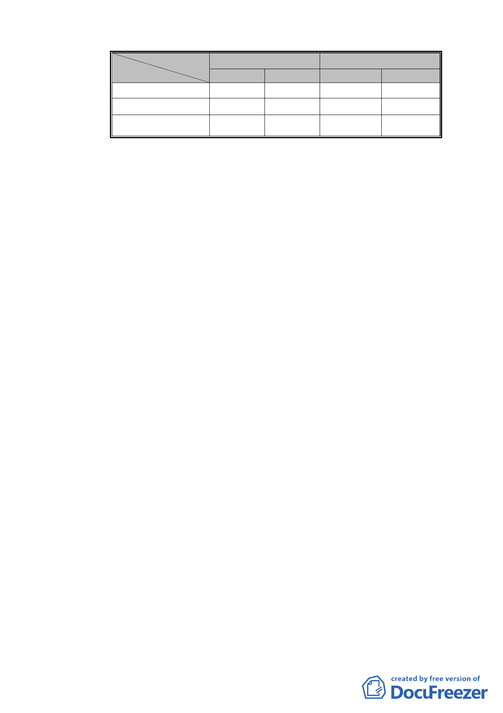

人數及面積
同意數及比例
私有總和(A)
同意數(B)
同意比例(B/A)
所有權人數（人）
土地
16
合法建築物
22
57
31.25% 31.82%
面積（平方公尺）
土地 合法建築物
1,344.00 4,513.90
72.75
763.34
5.42%
16.91%
六、 實
質再發展計畫：
（一）都市發展定位：
1. 周邊學校林立，公園綠地、博物館等自然人文資源豐
富，鄰近距離捷運新北投站，考量都市紋理及配合週
邊環境，未來規劃以永續發展及綠建築概念，塑造優
質旅館或商務住宅，提供本區舒適之觀光環境。
2. 依第三種住宅區相關土地使用管制規定，產品定位為
「溫泉旅館」或「商務住宅」等收益型不動產。
（二）整體規劃構想：
1. 為延續周邊建築視覺景觀、建築物量體、造型、色彩
與鄰近地區調和，並朝「綠建築」設計方向規劃，提
升環境品質。
2. 考量本地區所處區位，周邊步行之民眾比例高，爰本
更新地區東側鄰接計畫道路退縮留設 2 公尺以上無遮
簷人行道，並與道路順平，並串連延續鄰里人行步道
系統。
3. 退縮人行道除日常供公眾使用，亦可作為消防救災動
線及緊急救難空間。
4. 規劃當地居民使用之睦鄰設施，增進鄰里情感。
七、 實施方式與其他：
（一） 本更新地區內 471、472、498-1 地號等 3 筆土地由市府
依都市更新條例第 9 條「公開評選實施者」，以『設定地
上權』方式實施更新事業。
- 15 -